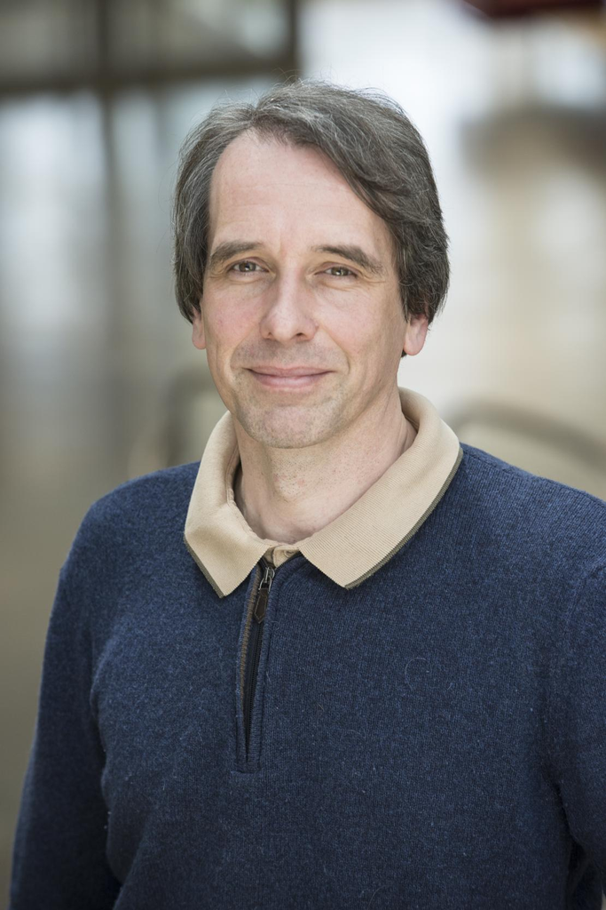

Member of MUSCA
I studied Mathematics, Philosophy and Computer science at Hamburg U/Germany and at Johns Hopkins University, USA. My master degree is in Mathematics (on stochastic differential equations), my PhD in Computer science (Petri net theory,1997) is from Hamburg University. After a postdoctoral period at Humboldt University of Berlin, INRIA Nancy and ENS Paris, I joined INRIA Rennes as a research scientist in 2001, in what would become the DISTRIBCOM team of Albert Benveniste and where I worked on fault diagnosis and telecommunication networks. After a visiting position at Ottawa University/CA in 2007 and another with ALCATEL-Lucent/Bell Labs at Ottawa, I moved to the INRIA Saclay center in 2008, defended my 'habilitation' thesis on 'Law and partial order', and founded the MExICo team at ENS Cachan, later ENS Paris-Saclay. Within MExICo, I became acquainted with and attracted to systems biology, boolean networks, and continuous Petri nets, which led me to turn to bioinformatics. After the end of MExICo in 2023, I joined the MUSCA team.
Chloé Weckel (with Romain Yvinec)
Souhila Founas (with Corinne Curt)